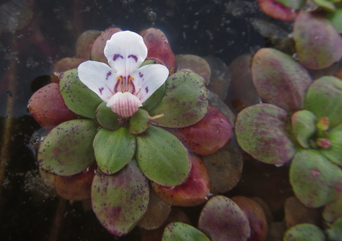

Linderniaceae
False Pimpernel Family
Linderniaceae is a family of flowering plants in the order Lamiales, commonly known as the false pimpernel family. It comprises mostly small herbaceous plants, often found in moist or wet habitats throughout tropical and temperate regions worldwide. Previously included within Scrophulariaceae, it was recognized as a distinct family based on molecular phylogenetic evidence.
Overview
The Linderniaceae family consists of approximately 13-16 genera and around 150-200 species. Members are typically small, annual or perennial herbs, sometimes aquatic or semi-aquatic. They are characterized by their often opposite leaves, zygomorphic (bilaterally symmetrical) flowers usually with a bilabiate (two-lipped) corolla, and distinctive stamen arrangements (often 4 stamens, sometimes 2 fertile and 2 sterile).
Linderniaceae species are distributed globally, with the highest diversity in tropical and subtropical regions, particularly in Asia and the Americas. They often inhabit damp soils, edges of streams, ponds, ditches, and seasonally wet areas. While not a major family in terms of economic importance, some species like Torenia (Wishbone Flower) are cultivated as ornamentals.
The family represents a relatively recent split from the broadly defined Scrophulariaceae family, reflecting ongoing refinements in plant classification based on genetic data within the Lamiales order.
Quick Facts
- Scientific Name: Linderniaceae
- Common Name: False Pimpernel Family
- Number of Genera: Approximately 13-16
- Number of Species: Approximately 150-200
- Distribution: Cosmopolitan, primarily tropical and subtropical, often in moist habitats.
- Evolutionary Group: Eudicots - Asterids - Lamiales
Key Characteristics
Growth Form and Habit
Most Linderniaceae are small herbaceous plants, typically annuals, though some are perennials. They often grow low to the ground, sometimes forming mats. Several genera are adapted to wet or aquatic environments. Stems are generally slender and may be erect, creeping, or ascending.
Leaves
Leaves are usually arranged oppositely along the stem, though occasionally alternate or whorled. They are typically simple, without stipules (exstipulate), and have margins that range from entire (smooth) to serrate (toothed).
Inflorescence
Flowers may be solitary in the leaf axils or arranged in terminal or axillary racemes or cymes. The inflorescences are generally not densely packed.
Flowers
Individual flowers are typically zygomorphic (bilaterally symmetrical) and bisexual. Key floral features include:
- Calyx: Usually composed of 5 sepals, which may be fused at the base to form a tube with 5 lobes.
- Corolla: Typically bilabiate (two-lipped), formed from 5 fused petals. The upper lip usually has 2 lobes, and the lower lip has 3 lobes. Corolla color varies (white, blue, purple, yellow, pink).
- Androecium: Stamens are attached to the corolla tube. Commonly there are 4 stamens, often didynamous (two long and two short). In some genera, only 2 stamens are fertile, with the other 2 reduced to sterile structures called staminodes. The filaments of the anterior pair of stamens are sometimes appendaged or spurred near the base.
- Gynoecium: The ovary is superior, composed of two fused carpels forming two locules (chambers). It contains numerous ovules. The style is single, terminating in a stigma with two flattened, often sensitive lobes that may close together when touched.
Fruits and Seeds
The fruit is typically a capsule containing numerous small seeds. The capsule usually dehisces (splits open) either along the septa (septicidal) or directly into the locules (loculicidal) to release the seeds.
Chemical Characteristics
While less studied for secondary metabolites compared to larger families, some members may contain iridoid glycosides, compounds common in the Lamiales order.
Field Identification
Identifying Linderniaceae often relies on observing a combination of features, particularly related to the flowers and leaves:
Primary Identification Features
- Opposite leaves: Most species have leaves arranged in opposite pairs along the stem.
- Zygomorphic, bilabiate flowers: Look for flowers that are bilaterally symmetrical with a distinct two-lipped corolla (2 lobes up, 3 lobes down).
- Stamen number and form: Check for 4 stamens (often 2 long, 2 short) or 2 fertile stamens plus 2 staminodes. Look for basal appendages on some stamen filaments.
- Sensitive stigma lobes: The two flat stigma lobes at the tip of the style often close when touched (though this requires careful observation or magnification).
- Superior ovary: The ovary is positioned above the attachment point of sepals and petals.
Secondary Identification Features
- Small herbaceous habit: Most are small, non-woody plants.
- Moist habitat preference: Many species are found in damp soil, along water bodies, or in seasonally wet areas.
- Capsule fruit: Look for small, typically ovoid or cylindrical capsules.
Seasonal Identification Tips
Identification is easiest during the flowering season, which varies by region and species but often occurs during warmer, wetter months (spring through fall in temperate zones).
- Spring/Summer: Active growth and flowering. Look for the characteristic flowers in moist, open areas.
- Fall: Flowering may continue, and fruits (capsules) become more apparent.
- Winter: Annual species die back; perennial species may persist as basal rosettes or dormant roots/rhizomes.
Common Confusion Points
Linderniaceae can be confused with small-flowered members of related families in the Lamiales order:
- Plantaginaceae (Plantain Family - some genera): Some genera (like Gratiola, Bacopa) have opposite leaves and zygomorphic flowers but differ in stamen details, stigma structure, or fruit type.
- Scrophulariaceae (Figwort Family - sensu stricto): Now a smaller family, but historical overlap means similar appearances exist. Scrophulariaceae often have different stamen configurations or non-sensitive stigmas.
- Mazaceae: Very similar appearance, also split from Scrophulariaceae. Distinguished by subtle floral and seed characters; Mazus often has a more prominent palate on the lower corolla lip.
Field Guide Quick Reference
Look For:
- Small herbs, often in wet places
- Opposite, simple leaves
- Zygomorphic flowers
- Bilabiate corolla (2 lobes up, 3 down)
- 4 stamens (didynamous) OR 2 stamens + 2 staminodes
- 2-lobed sensitive stigma
- Superior ovary
- Capsule fruit
Key Variations:
- Stamen number (4 vs 2+2)
- Presence/absence of filament appendages
- Flower color (white, blue, purple, yellow)
- Habitat (terrestrial moist vs. aquatic)
- Annual vs. perennial habit
Notable Examples
While many Linderniaceae are small and inconspicuous wildflowers, some genera are more widely known:

Lindernia dubia
Yellowseed False Pimpernel
A common, small annual weed found in wet, disturbed sites across North America and other parts of the world. It has small, pale lavender to whitish bilabiate flowers, opposite leaves, and is typical of the genus Lindernia.

Torenia fournieri
Wishbone Flower
A popular ornamental annual grown for its attractive, often bicolored flowers (blue, purple, pink, yellow, white). The common name refers to the way the upper two stamens arch and join at the anthers, resembling a wishbone. Native to Asia.

Craterostigma spp.
Resurrection Plants (in part)
This genus includes several species native to Africa and Asia known for their remarkable desiccation tolerance. These "resurrection plants" can survive extreme drying, appearing dead, then rapidly rehydrating and resuming photosynthesis when water becomes available.
Phylogeny and Classification
Linderniaceae belongs to the large and diverse order Lamiales within the Asterid clade of Eudicots. The family was formally segregated from the traditional, broadly defined Scrophulariaceae based largely on molecular phylogenetic studies initiated in the late 1990s and formalized by the Angiosperm Phylogeny Group (APG).
Its position within Lamiales places it relatively close to families like Plantaginaceae, Scrophulariaceae (sensu stricto), Paulowniaceae, Mazaceae, and Orobanchaceae. The defining characteristics, such as the bilabiate corolla, stamen number and structure, and sensitive stigma, are shared to varying degrees among related families, highlighting the complex evolutionary relationships within this order.
Position in Plant Phylogeny
- Kingdom: Plantae
- Clade: Angiosperms (Flowering plants)
- Clade: Eudicots
- Clade: Asterids
- Order: Lamiales
- Family: Linderniaceae
Evolutionary Significance
The establishment of Linderniaceae highlights the power of molecular data in refining our understanding of plant relationships. Key evolutionary aspects within the family might include:
- Adaptation to moist environments: Many species thrive in wet habitats, showing adaptations for dispersal or survival in these conditions.
- Stamen evolution: The variation in stamen number (4 fertile vs. 2 fertile + 2 staminodes) and morphology (filament appendages) reflects ongoing evolutionary modifications related to pollination mechanisms.
- Sensitive stigma: This feature, also found in some related families, likely plays a role in optimizing pollen deposition and preventing self-pollination.
- Desiccation tolerance: The extreme drought survival mechanisms in genera like Craterostigma represent a remarkable physiological adaptation.